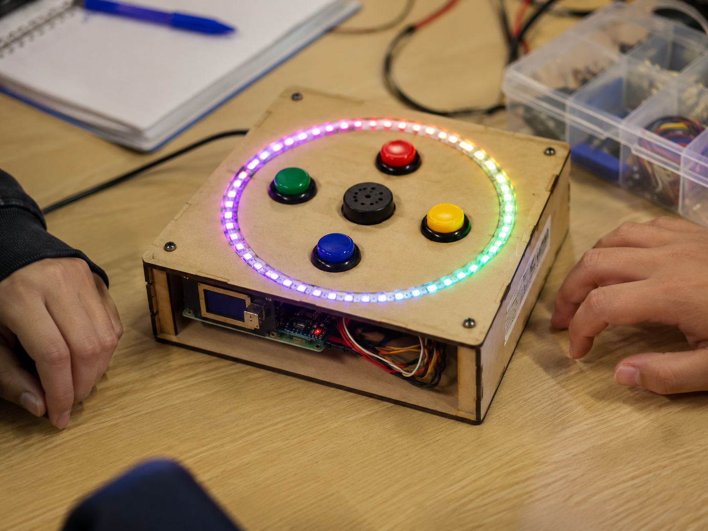
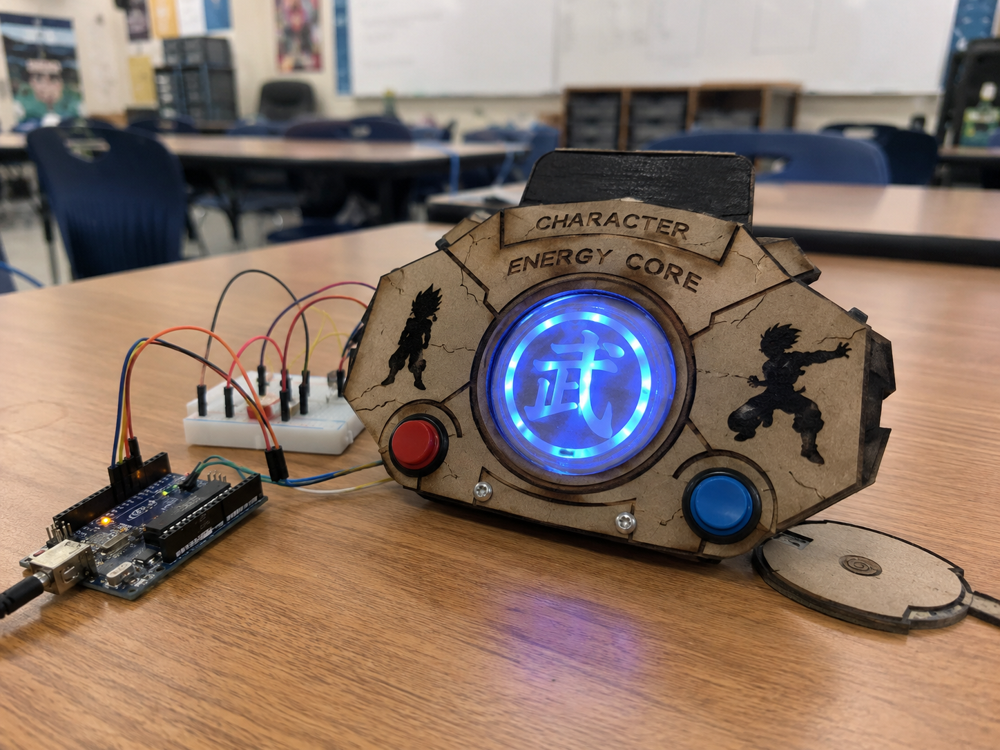
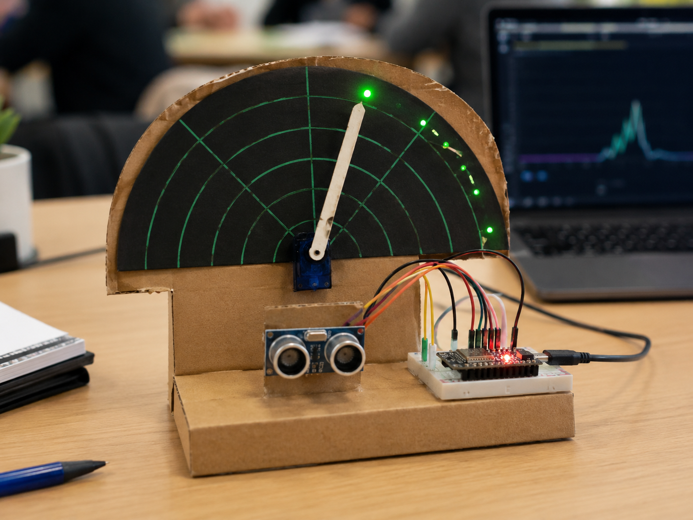
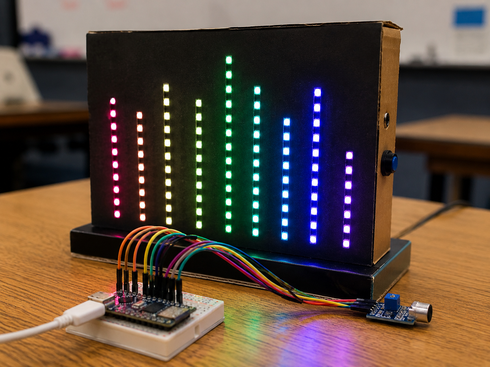
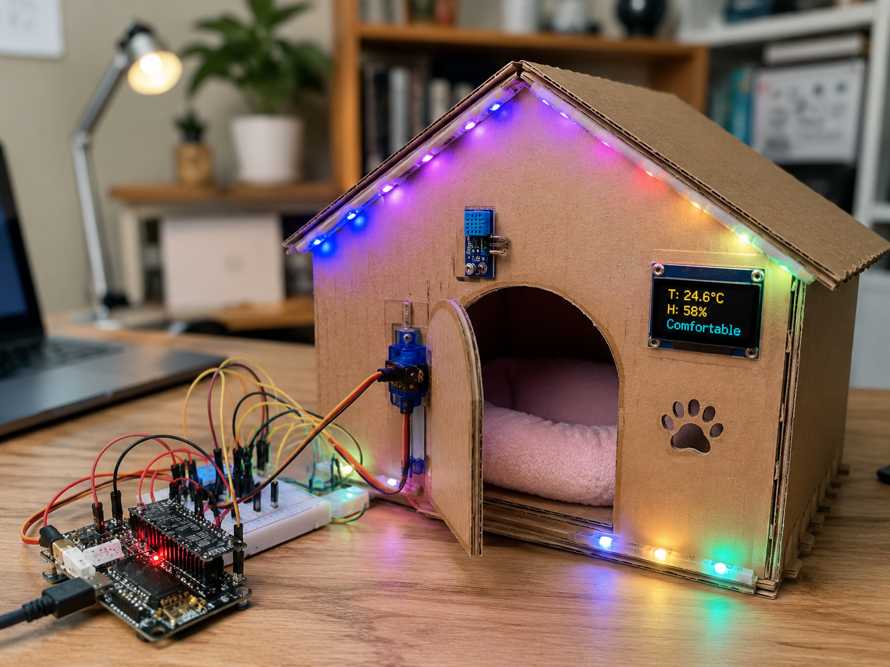
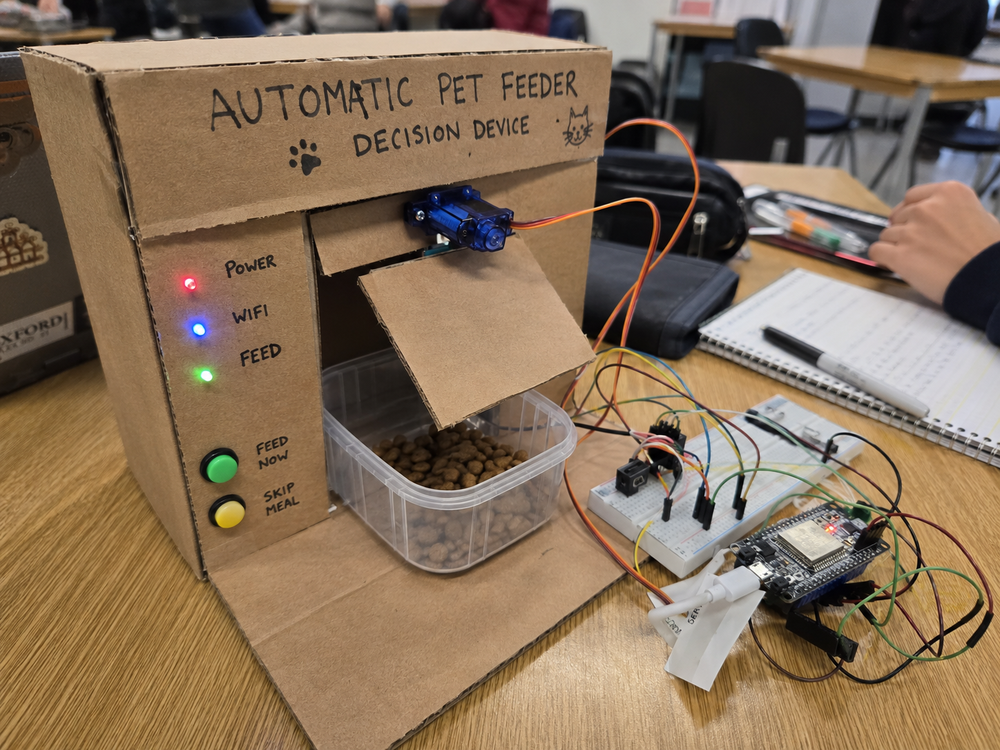
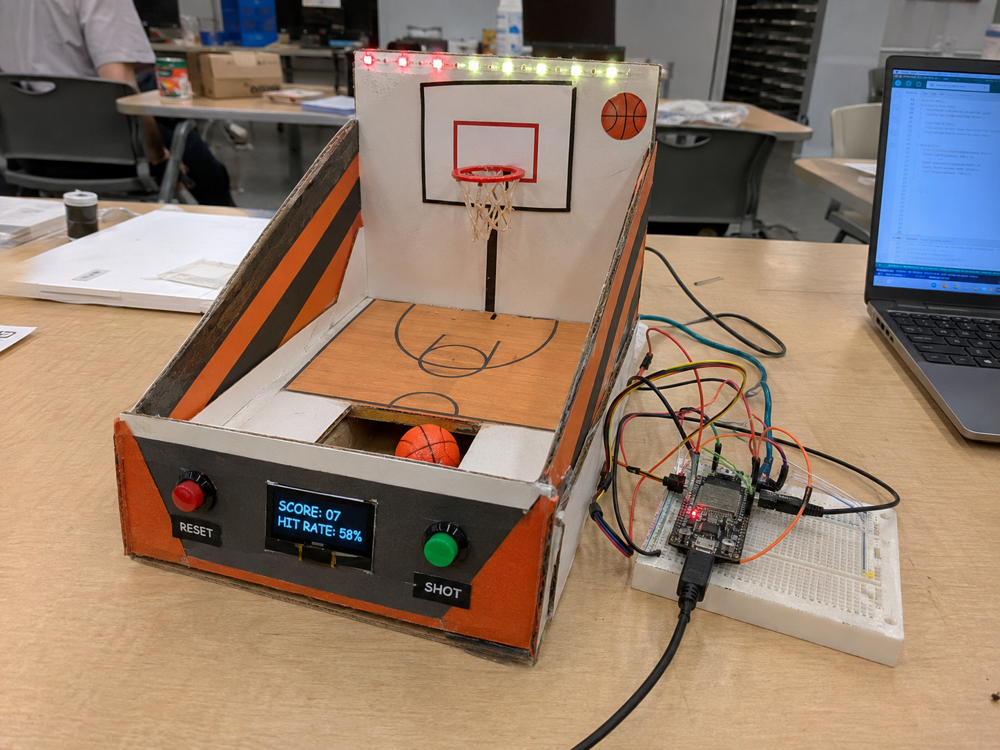
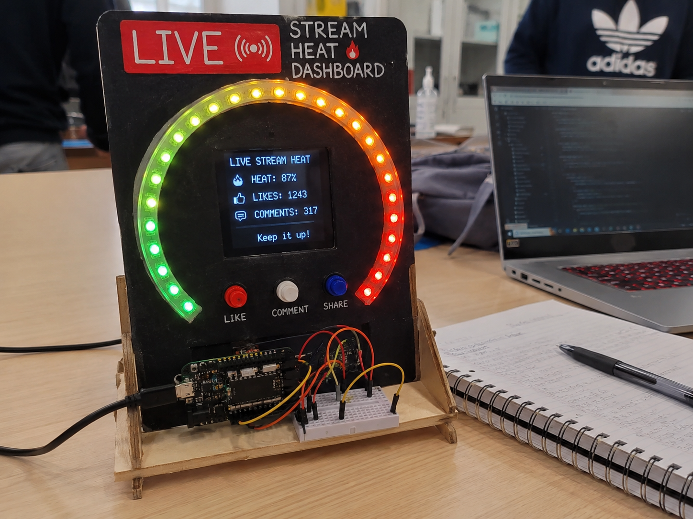
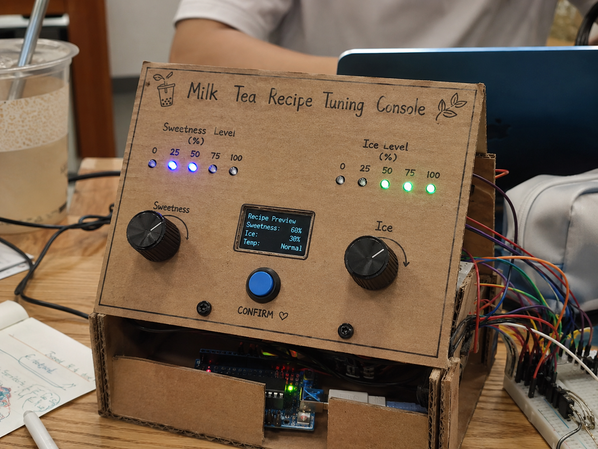

Game / Math / Coding
反应训练舱
灯环、按钮和蜂鸣器做成一个可玩的反应装置，适合函数、随机和条件判断
适合知识点函数、随机、条件判断
亮点灯光反馈强，展示感好
一小时版本基础玩法 + 计分逻辑
这次我把 9 个代表性项目的真实场景风格效果图直接放进了网站里。现在先用静态图片做展示，后面你们接入 API 以后，可以让系统按项目动态生成或匹配图片

灯环、按钮和蜂鸣器做成一个可玩的反应装置，适合函数、随机和条件判断

通过发光核心、按钮和角色设定，让学生把能量积累、状态切换和反馈做得更有代入感

把超声波传感器读到的数据变成指针和灯光反馈，学生更容易理解输入与输出的关系

声音传感器和灯带联动，能很快做出舞台感，适合讲阈值、数据范围和模式切换

把环境数据转成舒适度评分和门控反馈，既有故事感，也能让学生讨论评分规则是否合理

用按钮、状态灯和舵机挡板做出一个有真实动作反馈的投喂装置，很适合讲条件判断和限制规则

把得分、命中率和运动主题结合起来，学生会更愿意去理解数据为什么变化

把点赞、评论和热度等级做成可实时变化的仪表盘，很适合短视频兴趣学生

用旋钮、指示灯和显示屏把甜度、冰量和规则设计变成一个生活化的互动项目
你现在先用这 9 个项目做静态展示。后面如果接入 API，可以根据生成结果自动匹配图片、生成更多项目卡，或者换成真实课堂视频
后续可接入本地 mp4 或外部存储视频资源
适合展示按钮触发、数据变化和学生互动过程
后期你们可以让系统把项目文本、图片和视频一起返回